Mount Hood Leuthold's Couloir
It was Friday morning; time to decide where to climb over the weekend. Huge, gloomy clouds were rolling in over Washington and Canada, putting an ambitious idea in the Enchantments to rest. Aidan, Dan, Chris and I were eager for some alpine climbing. Paradoxically, we also wanted sun, hard snow, and dry rock! Dan noticed that Oregon was spared the clouds for a day, so we could climb Mt. Hood via an interesting route on the west side of the mountain. Our email devices crackled with static and threatened to overheat as we made plans to take two cars and meet late tonight in the Timberline Lodge parking lot. Chris had already climbed Mailbox Peak that morning, so he needed to work until 9 P.M. Kris had formed an after hours party, and so we said goodbye at work I promised to see her again in less than 24 hours!
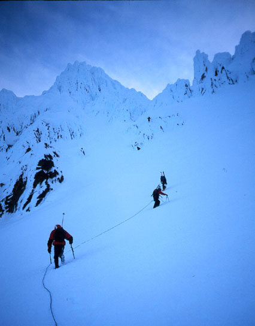
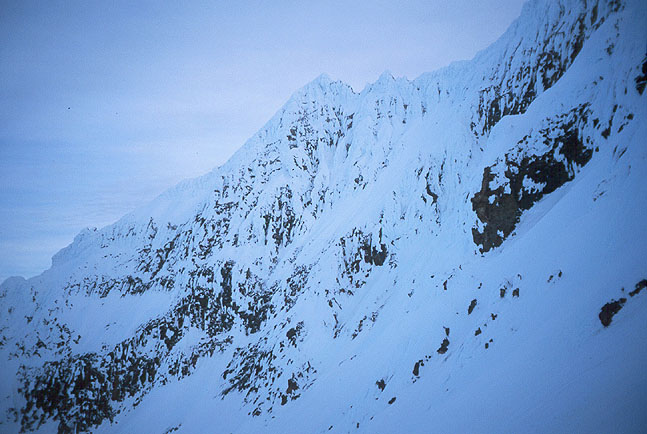
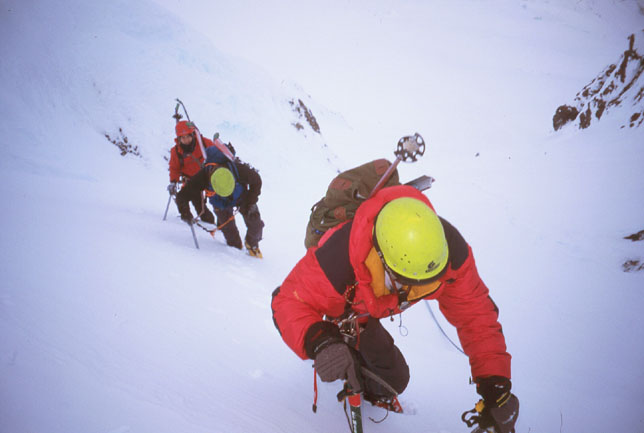
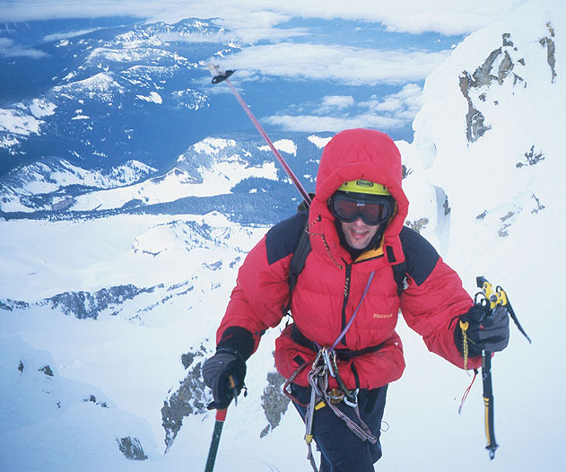
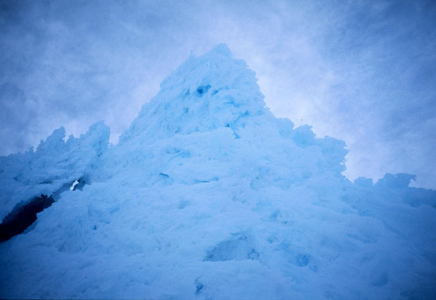
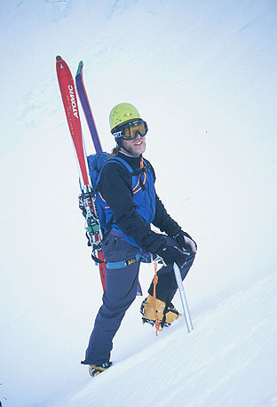
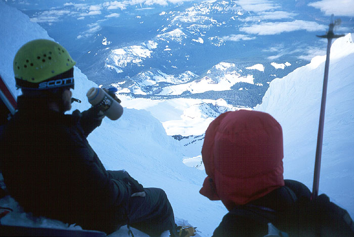
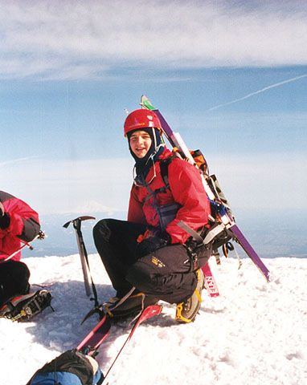
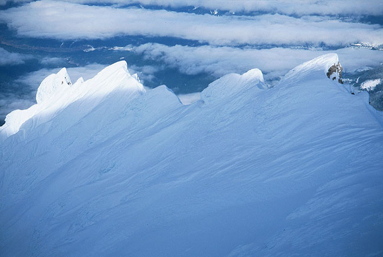
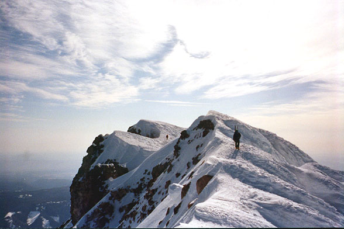
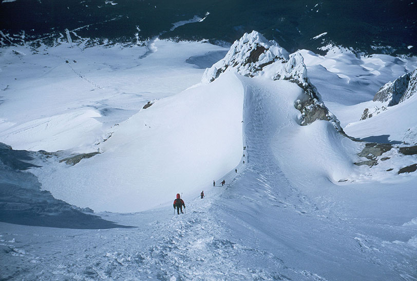
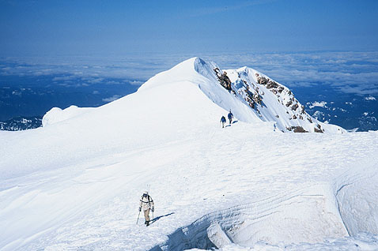
Chris drove to Centralia, and I continued to Timberline Lodge. For the last hour my eyelids had become so heavy. We arrived at 2 A.M. and found Dan and Aidan readying to climb! “Glad you guys made it,” said Dan. There would be no “nap,” alas!
We were moving by 2:30 A.M., Dan and Aidan on skis, while Chris and I walked. We carried one rope for crossing the Reid Glacier, but intended to climb the route unroped. There were two routes we had in mind: Leuthold’s Couloir and the Reid Glacier Headwall. Dan had climbed the Headwall before and enjoyed it. I had no time to even glace at the guidebook about these routes, but a quick search on the Internet found one fellow who had loved Leuthold’s Couloir, and another who was disappointed in the short length of the Headwall. Based on this “overwhelming” evidence, I was pretty keen on the Couloir. However, I had only the vaguest idea how to find it.
Hiking up the groomed ski runs was very easy. Several parties came down, warning us of 60 mile-per-hour winds, allowing that we could go see for ourselves, but it would probably be a waste of time. The wind did increase, coming from the west. We knew two things: often, this kind of wind dies with the sun, but we also knew bad weather was coming from the west, so this wind might strengthen. We continued, briefly discussing the Wy’east route, which should be protected from the wind. But again, we had only vague ideas of the route location (“somewhere on the right”). Dan and Chris pulled ahead, turning into the wind to reach Illumination Rock. Aidan and I continued, stopping once to drink. My failure to bring windproof pants was bringing me grievous harm already: my privates were numb - possibly frozen! With great alarm and shaking limbs I found an extra glove for insulation. I breathed a sigh of relief as sensation returned. However, as I walked, this “blanket” would move up and to the right, provoking unseemly adjustment periods.
We contoured up and left, our objective saddle between Illumination Rock and the mountain growing closer. Aidan’s skis slipped now and then on icy snow. We were both pretty tired, but determined to catch Dan and Chris. Occasional sulfuric whiffs from Devil’s Kitchen made us queasy, and a faint light grew in the east. At the saddle, we roped up for glacier travel, and talked to a solo climber from Evergreen College. He took off to climb the Headwall, and we contoured down and across the Reid Glacier. It was great to see a different view of the mountain, since the south side was becoming monotonous. The jagged (and infamous) Yokum Ridge was on the skyline, festooned with rime-ice pinnacles. We had some confusion choosing the right path among several gullies and rocky buttresses, but were glad to be entering the mountain’s stronghold. After we unroped I dragged the rope behind in case in became necessary later (this kept my pack lighter too!).
Aidan led upward, turning a crested ridge of snow as the slope steepened. Ice-covered walls were slowly closing in around us, finally making the correct way obvious, as what looked like a good choice below turned into a crumbling rime-ice wall on closer inspection. We could see the soloist working his way up a broad “V” above the bergschrund. There was a great rest-spot where the couloir narrows to about 15 feet. Just before this there was a fantastical rimed tower, and a level platform at its base. We ate and drank until we became cold. Re-entering the couloir, we found it angled at 45 degrees, and icier than below. A rain of ice chips began, funneled down from the melting towers of the summit. Once I looked up and narrowly avoided a rude slap in the face by quickly looking back down. The small-but-fast ice chunk disintegrated with a Crack! on my helmet. Others have gotten black eyes and bruises in this couloir. We counted on speed, timing and a little luck to get by without injury. It reminded me of a Texas hailstorm - only we were lying flat on the grass!
So we continued up, every now and then someone said “OW!” or something more colorful. The most irritating hits for me were on the fingers and knees. First I was behind Chris, who I began to see as a great shield. Dan and Aidan both sped by on the left with rapid front pointing. I did this too, but at considerable expense to my bursting lungs. On we climbed, as the couloir widened again and the hailstorm waxed and waned. I was enjoying practicing different snow climbing techniques, sometimes front pointing, other times using flat-footed technique to rest my calves. It wasn’t necessary to bring an ice tool on this route. I would sometimes use mine as an extra cane, or holster it on my harness. A wind came down the slope, catching the skis Dan and Aidan were carrying “like a sail.”
After another short rest out of the way of falling ice, we reached the broad summit ridge. My lack of sleep really caught up with me here, as I stopped to gaze out at the snowy hills for longer periods. Falling to the rear, I plodded along, dimly noticing we had reached sunny slopes. Suddenly, we were in a different world with many happy-but-tired people in mirrored sunglasses. At two or three points along the ridge, a party was emerging from the slopes below. I stumbled along, yawning and dragging my rope. My companions were resting on the summit, taking pictures in the small crowd of people. A man plodded up and said “Two down, two to go.” He took a look around, and marched back down. A party of four (wearing jeans?) with eight axes crowed about the severe difficulties they had encountered. Chris mistakenly told people we had climbed the Headwall. A man saluted Dan for having attempted Yokum Ridge. “You’ve got bragging rights in my book!” A small army of identical men led women with nervous grins on short ropes. A man in a Himalayan expedition suit led a hunched, nervous party of nine who peered cautiously over his shoulder. Already I felt we had left the mountains, and entered a city park. But I wasn’t disappointed: everyone here was having a great adventure of their lives. It is good that Mt. Hood has wilderness routes and a “standard” route. A few years ago there was a proposal to introduce limits on the standard route. The result could have been overcrowding of other, more dangerous routes. I’m glad this didn’t happen - the south side has already been sacrificed to industrial strength recreation (ski runs to 9,000 feet). It would be silly to abruptly define the 2,000 feet directly above the ski runs as wilderness when the rumble of grooming machines and screams of delighted recreationists can be heard from the summit.
We finished the climb in 6.5 hours - Dan considered this a quite poor time. If we hadn’t roped up for the glacier it would have been 6 hours. Quite a crowd had gathered so we hastened to beat them down. The bergschrund above the Hogsback hadn’t opened, so it was just a walk straight down into the crater. Dan and Aidan readied their skies for descent, while Chris and I plodded down on foot. Glissading was very painful due to a hard but bumpy surface. Later we had excellent glissading all the way to the Silcox Hut. Two metal pickets on my pack acted as breaks, so I had to crunch up (good ab workout!) to slide. The final 1,000 feet seemed to take forever, plodding along in the sun with a pounding headache. In the parking lot I met the soloist, and he talked about some exciting ice steps on the Headwall, but he was also disappointed with the short length of the difficulties and long sections of snow on the ridge. Such is life!
We piled everything into the vehicles when I arrived to avoid a ticket officer methodically working his way down the row of cars. Zooming away, we stopped to sort gear and change clothes for the long (4 hours?) drive home. I liked the idea of a rousing lunch after the climb, but everyone was tired and the desire to just get home was strong.
Somewhere along the way I was being derisive of the party that loudly estimated their slope angle at 50 degrees, when it was merely 30. But Chris, in his sturdy Polish way said “better the man who says it is 50 degrees and climbs it, than one who fears wind higher up and turns around early!” Well said - those guys had guts!
Thanks Dan, Chris and Aidan!